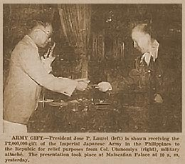

|
j
a v a s c r i p t |
September 14, 1944

"A Gift"
Col. Utsunomiya presented Laurel with a P2,000,000 "gift to the Republic" on behalf of the Japanese Army. Laurel's letter of thanks said: "Our greatest regret is that, with the WAR approaching its final stages ... we cannot do more than that we have been doing." The Filipino youth, decimated in Bataan and Corregidor, or otherwise recovering from battlefield ailments, are engaged in the "two vital functions of the Republic ... maintenance of peace and order, and the production of food and other prime necessities." So we will "render every aid and assistance to the Imperial Japanese Government, short of conscription." It's quite a bold letter. Perhaps, pressed by the Japanese, the government decided to take the bull by the horns and fight back. The exaggerated picture painted by Laurel of our youth being near the "point of exhaustion" contradicts everything Tokyo has been saying about conditions here. What the Japanese will not publish is a STRONG letter by Recto complaining about their recent activities, including house grabbing and propaganda. I'm told that may be the main reason the Japanese didn't take Manga Avenue and other houses this week. The air raid siren (a wave of repeated short blasts) went on between 0700 and 0800 followed by the clear-standby, or alert signal (two sirens 30-seconds apart) at 0905. I left ten minutes later and arrived at the Sotelos in time for the second air raid warning at 0955. American planes were probably nearby but skipped Manila. We heard the alert again at 1100; Japanese fighters patrolled overhead until 1300, and intermittently until 1800. Japanese civilians nervously dashed for the shelters amazed at the nonchalance of the Filipinos who were laughing and waiting for the music to start. Nimitz said last Tuesday's raid over Cebu, Negros and Panay netted 150 Japanese planes on the ground and 50 in the air. Philippine skies are being cleared. |
|
|
|
|